Rockets
Air MK1
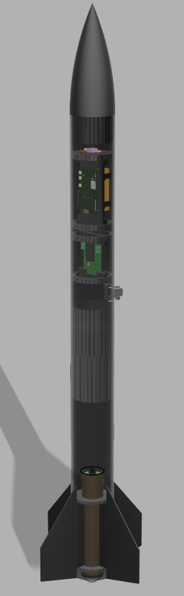
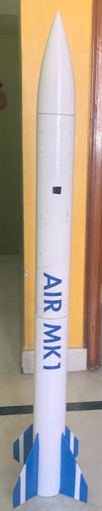
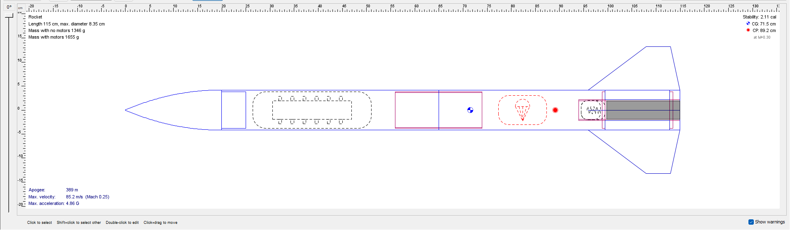
Air MK1 is a high-powered rocket, designed to fly to an altitude of over 1km at a max velocity of over 600kmph. Air MK1 uses a 74mm cardboard mailing tube as its airframe, and motor tube, with a 3D Printed PLA nosecone on top. The fins, centering rings, and motor retainer are precision cut out from 3mm thick Plywood. The payload for Air MK1 is the TFAC flight computer designed by me, TFAC flies onboard the rocket to record data and test out its software. TFAC is configured to fire Pyro Channel 1 at apogee but isn't connected to any black-powder charge. This is mainly to check if the computer has a good understanding of where the apogee is, and to see whether it cycles through the state machine properly. TFAC is powered on by twisting two wires that are connected to the computer's switch terminal. Additionally, the vehicle has a RunCam Split 3 to capture onboard video. Air MK1 is recovered using a 48" nylon parachute deployed by the ejection charge from the motor.
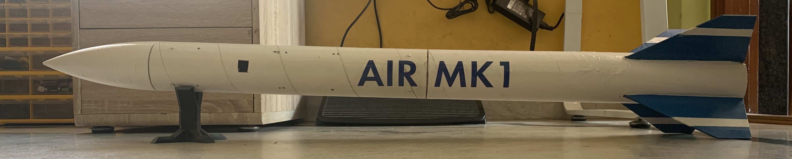
Along with TFAC is a LoRa telemetry radio to transmit data from the rocket to a ground station. The ground hardware is comprised of an identical LoRa radio and a Teensy 4.0. The Ground Control Software (GCS) is a GUI written by me. The ground software was written in Python with the PyQt5 library. The ground software displays flight data such as altitude, velocity, acceleration, and GPS coordinates. The data transmission rate is variable and lowers as the vehicle ascends. Along with the ability to display data the GCS can also send commands to power on vehicle cameras, fire pyro-channels and switch system states. The code for the Ground Software can be found here.

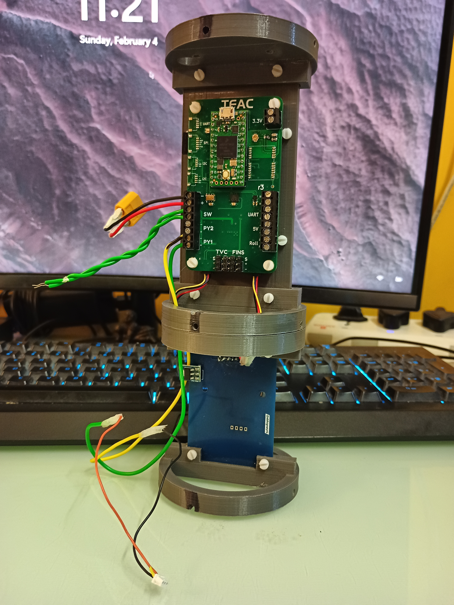
Air MK2
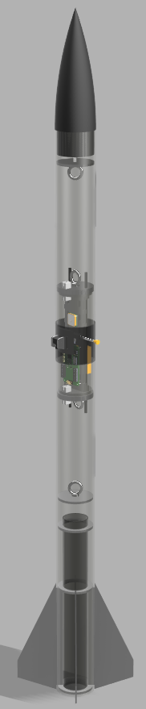
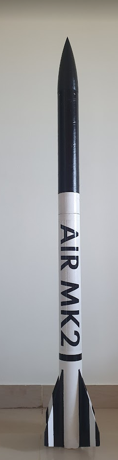
Air MK2 is my first dual-deploy high-power rocket. Air MK2's main goal is to have TFAC deploy parachutes and go high and fast. Air MK2 is built of materials similar to those of its predecessor. It uses an identical 3" diameter cardboard tube as its airframe and a 2" diameter cardboard tube as its motor mount tube. Air MK2's fins are through-the-wall fins laser cut from 4mm thick plywood. The centering rings and other bulkheads are cut from 5mm thick plywood. The nosecone of Air MK2 is 3D printed and the coupler tube will serve as the Avionics Bay. The sled and bulkheads of the avionics bay are 3D printed, and there are plywood covers on top of the bulkheads to protect them from the ejection charge. There are also two 6mm diameter threaded rods running through the av-bay to provide structural rigidity and an eyebolt on each bulkhead for shock-cord attachment. An Ebyte E32 LoRa module is the telemetry radio for Air MK2. The LoRa is glued to the back of the avionics stack and connects to the flight computer via two qwicc connectors. For GPS a ceramic U.FL antenna is placed at the front of the stack. A 3s 800mAh LiPo battery powers on the avionics bay and there is a pull-pin switch to power on the flight computer.
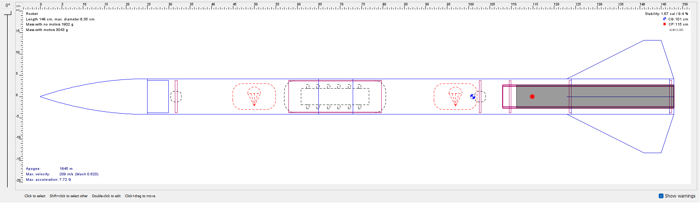
Additionally, there are 4 lever connectors on each bulkhead to connect the pyro channel outputs from TFAC to the actual pyro charge. This makes it easy to switch between different Pyro Channels and different Pyro Charges without requiring any extra tools.
Air MK2 is 1.5m tall and has a dry mass of 1800g. It is estimated to reach an apogee of 1800m at a max velocity of Mach 0.7 on a J135W equivalent rocket motor.
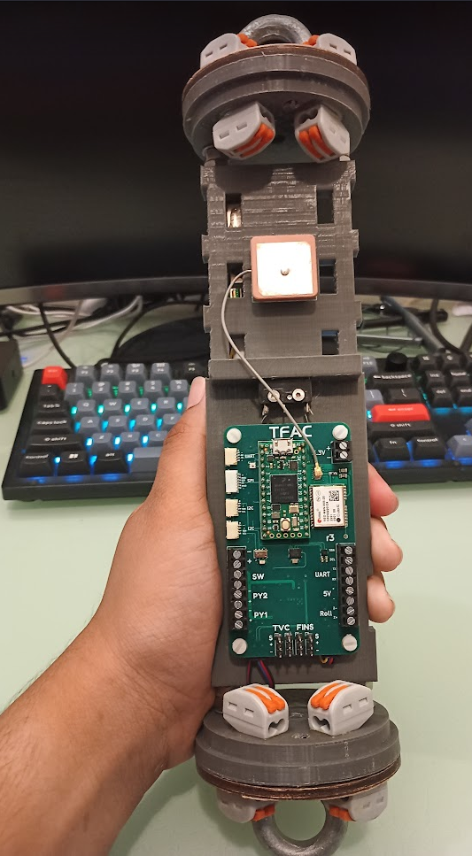
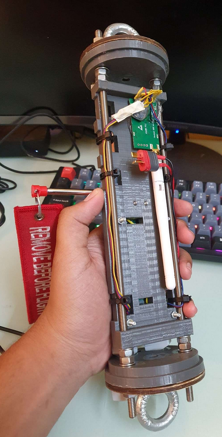
Air MK2.1
Air MK2.1 is pretty much just Air MK2, but bigger. I wanted to take all the lessons I learned through building Air MK2 and put it into a similarly built, but better rocket. Air MK2.1 is 1.8m tall, has a dry mass of 2.2kg, and is simulated to fly to an altitude of 3km on a K270 equivalent rocket motor. The motor tube of Air MK2.1 is 20cm longer than Air MK2's so it can accommodate a larger motor so that this rocket can fly even higher and even faster than Air MK2. The coupler is also a little longer so that the middle section of the rocket where the forward and aft airframe sections connect is made more rigid.
One notable change from Air MK2 is the decision to use bolts for motor retention rather than nuts that are glued onto the inside of the aft centering ring. This is less prone to an accidental decoupling of the motor retainer. Other than that there is not much of a difference between Air MK2 and Air MK2.1. The two rockets have the same goal, use the same kind of motor tube and fly identical flight computers with mostly identical software.
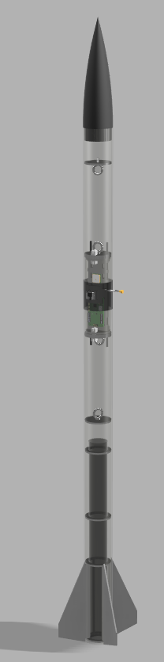
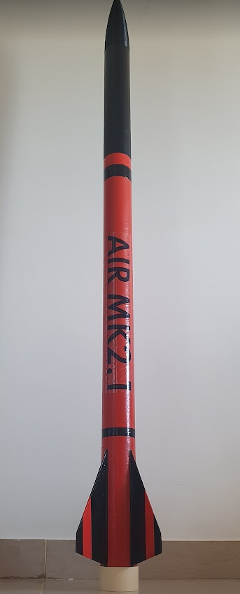
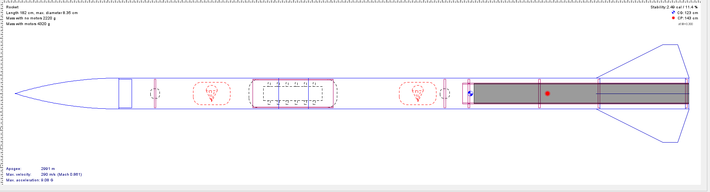
Air MK1.1
Air MK1.1 as the name might suggest is heavily based on Air MK1, my first high power rocket. The vehicle has two 0.5m long sections of 76.7mm diameter cardboard tube. The forward section is the payload section which holds a CanSat, mechanical parachute ejection system, and nosecone. The aft sections hold the 4mm plywood fins and motor mount assembly.
Air MK1.1 features a low-cost CanSat system designed by me. The CanSat uses a Teensy 4.0 as its microcontroller and uses an LSM6DSO as its IMU and a BMP280 as the Barometer. Additionally, it has an NRF radio module for telemetry. All components are mounted on a 35x80mm 2 layer PCB.
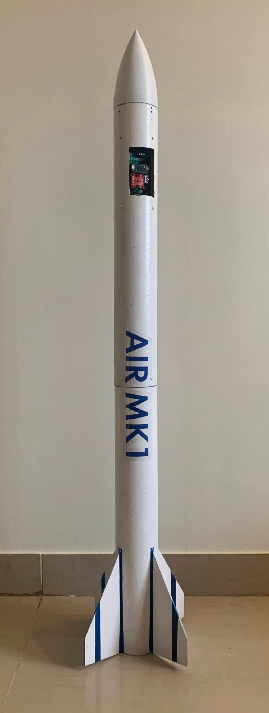
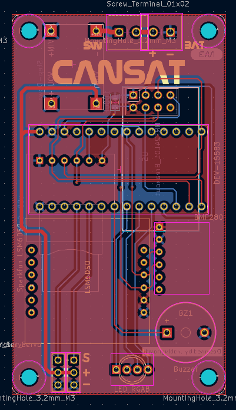
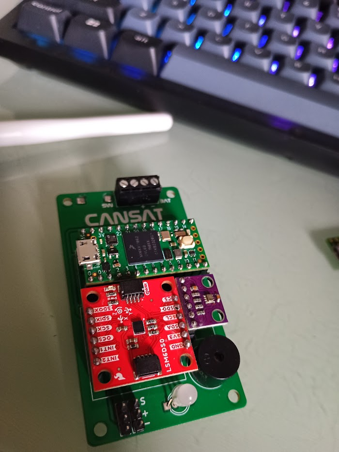
The mechanical ejection system is integrated into the CanSat stack and makes use of a spring and servo-actuated pusher plate mechanism to eject parachutes. The spring is attached to an extruded cylinder at the base of the stack. The other end of the spring is attached to the pusher rod and pusher plate. The bottom of the pusher rod is locked in place via a servo-actuated pin. When the servo is actuated the pin and plate are released and push the parachutes out of the rocket. All components of the ejection system are 3D printed out of PLA.
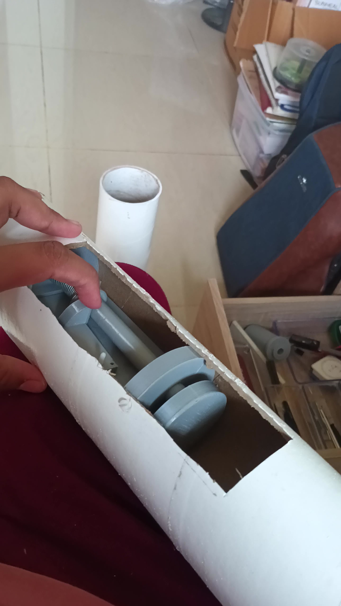